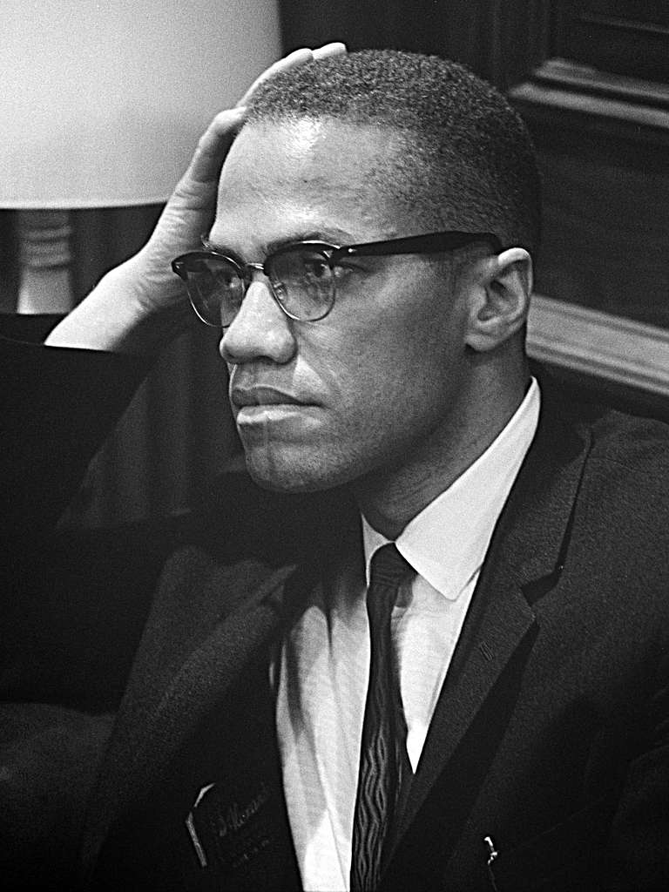

Malcolm X was a leader in the civil rights movement and an African American revolutionary who fought for social justice and equality for black people in the early 1960's
Malcolm X had a fall out with NOI after condeming the actions of the members. His sepereration from NOI had resulted in the group making threats against him, and eventually attacking him and his family. Malcolm was not afraid of these men and continued to stand his ground, not changing his values to allign with the wants of NOI. On february 21, 1965 Malcolm was assassinated in Manhattan, New York City, as he was giving a speech to address the Afro-American Unity.